Monkey Mind - Fiction Short Film
 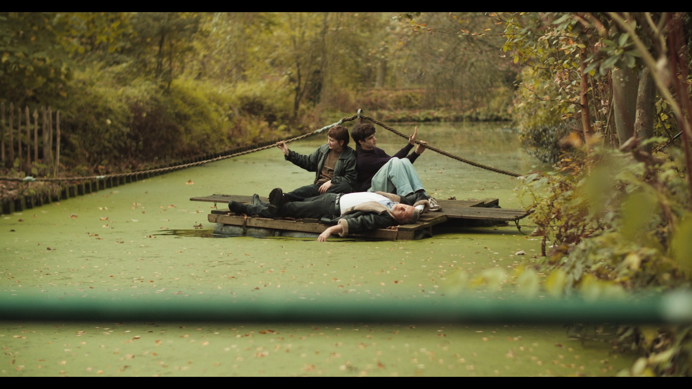
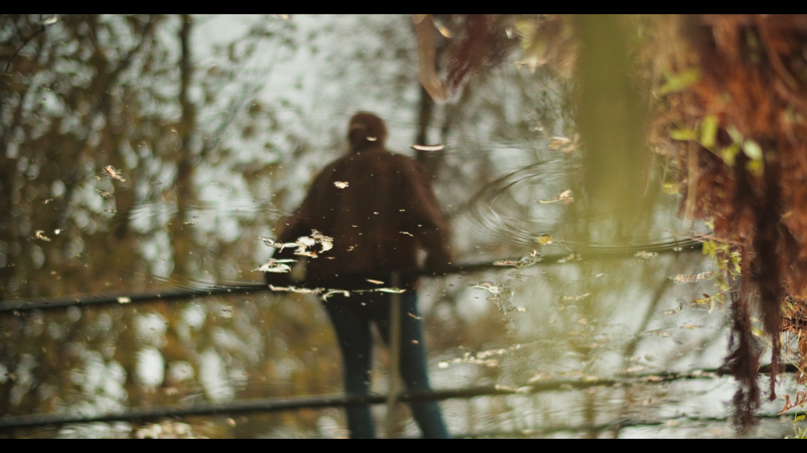
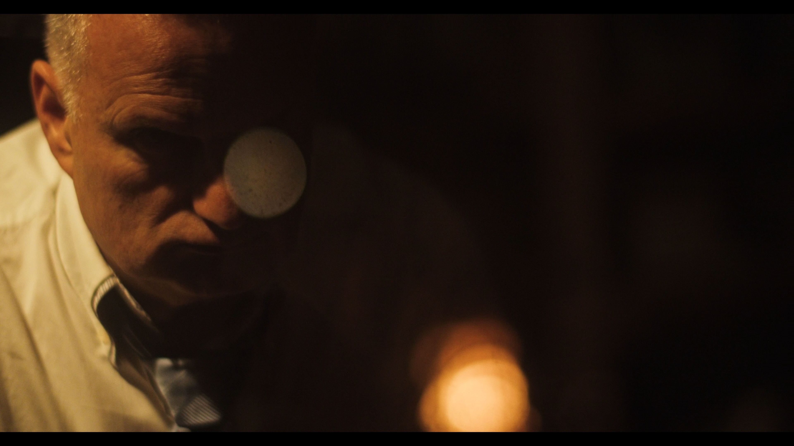
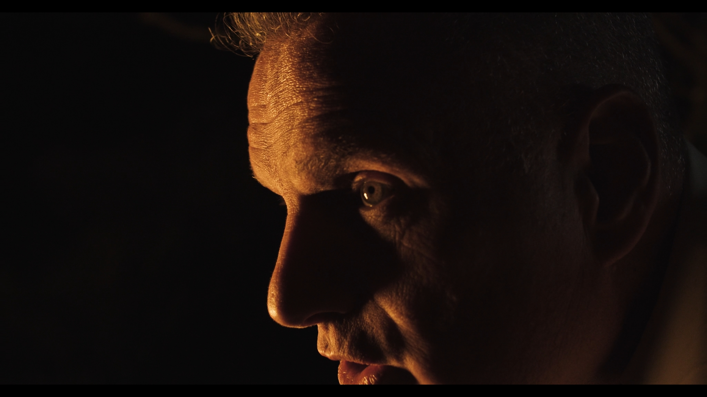
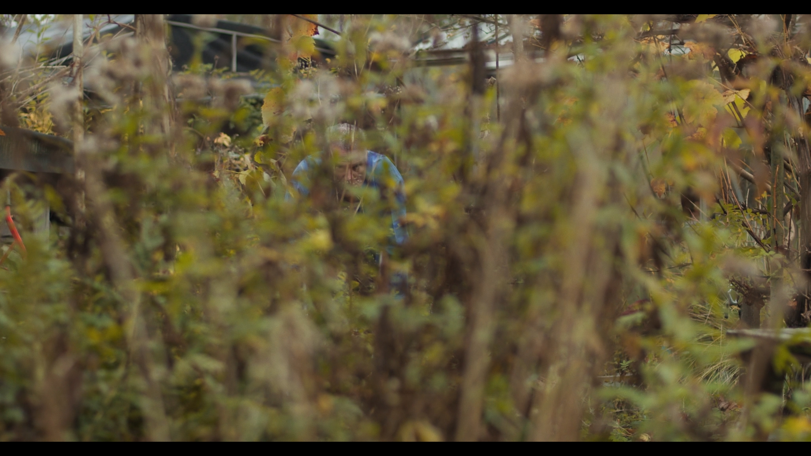
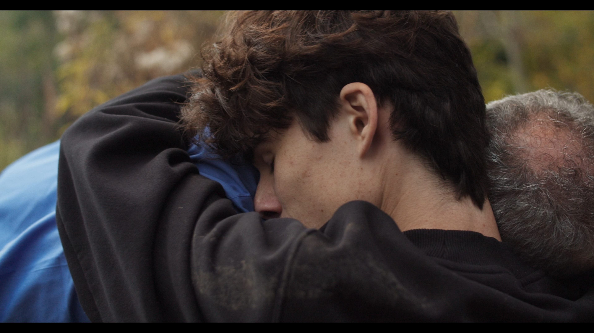
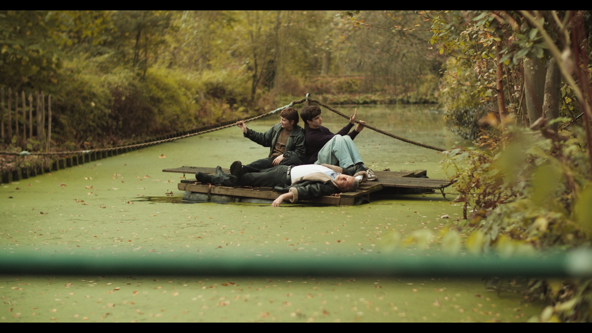
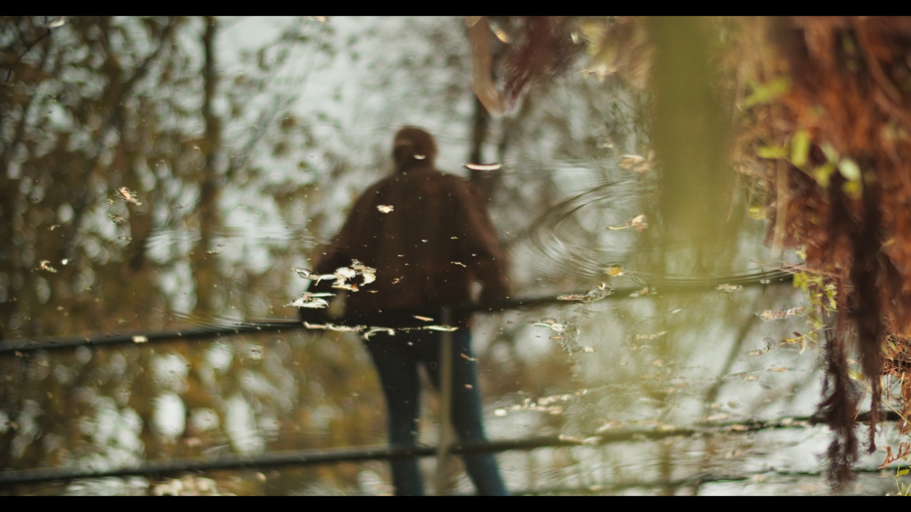
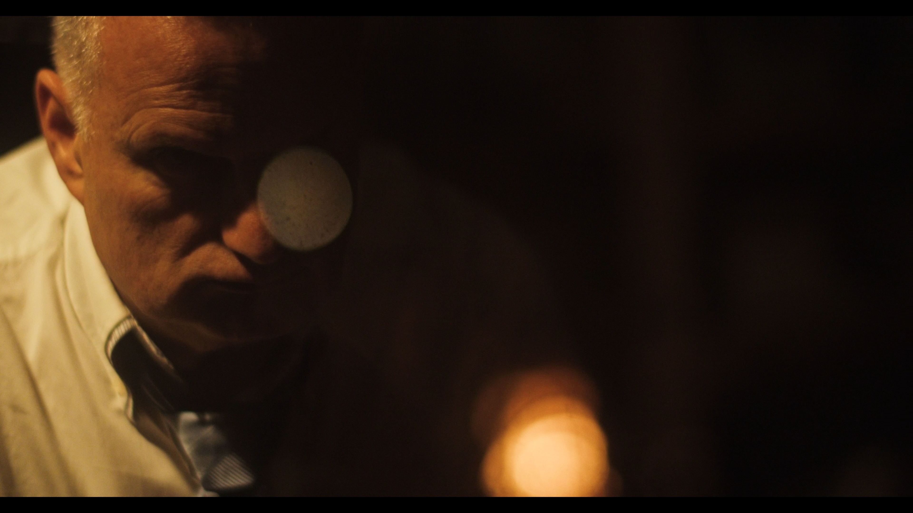
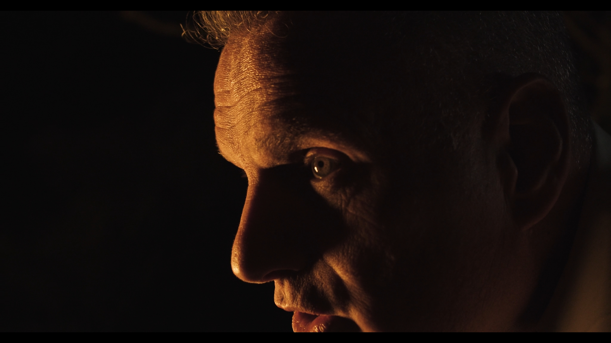
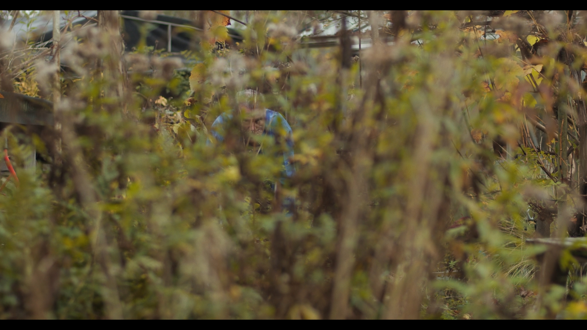
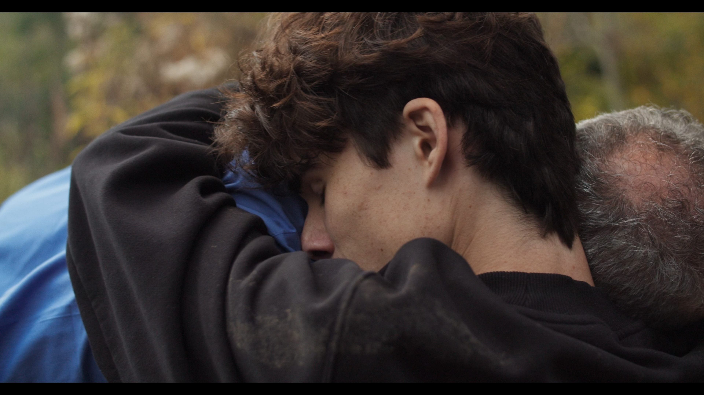
Written and Directed: Tijmen Snoep
Producer: Mia Tseboeva
DOP: Bert Idenburg
Edited by: Sam Bogstedt & Tijmen Snoep
1st AD: Sam Bogstedt
Cast
Robert Rosier
Stella Mancini
Mus Ruinen
Tristan Valkenburg
Line Producer: Anna Messechkova
Script Supervisor: Borislav Chobanov
Costume Designer: Lara Boon
Art Director: Agata Grochowska
1st AC: Alexander Dragomirov
Gaffer: Maria Palma
Spark: Ludvig Larusson, Augustin Weski
Hair and Make up: Lara Boon
Catering: Elia Messechkova Jones
Music Composer: Lilian Müller & Agamemnon Maziotis Vasileiou
Colorist: Sam Bogstedt
Sound Recordist: Nicolas Lopez
Sound Recordist Assistent: Celeste Wright
Sound Designer & Mixer: Agamemnon Maziotis Vasileiou
Poster Artwork: Agniet Snoep
Graphic Desinger & Poster Deisgn: David Avram
Special Thanks: Guissanée de Vartavan
Rohan Sukhraj
Tiuri van Megchelen
Iga Wojak
Park Zestienhoven
Frank Schurunk
Ilya & Judika
Leo Nijland
Nina & Billy Bogstedt
Made Possible by: Het CultuurFonds